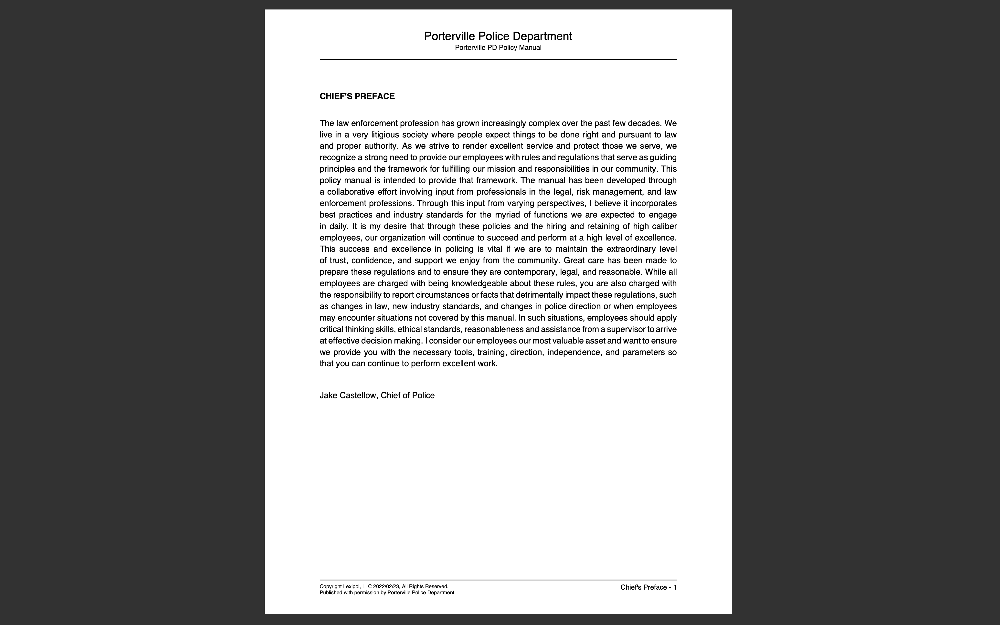
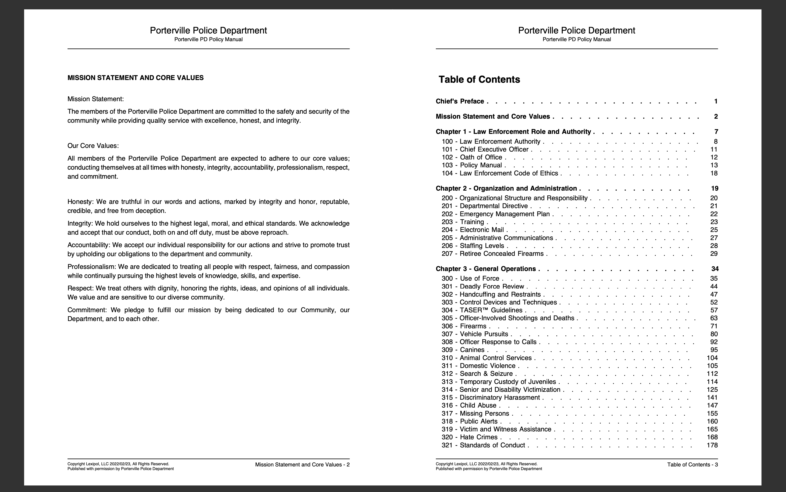
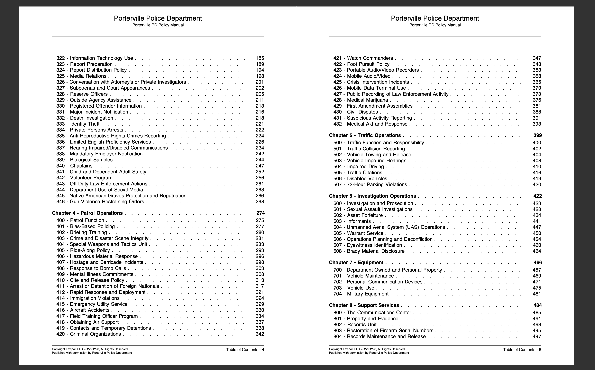
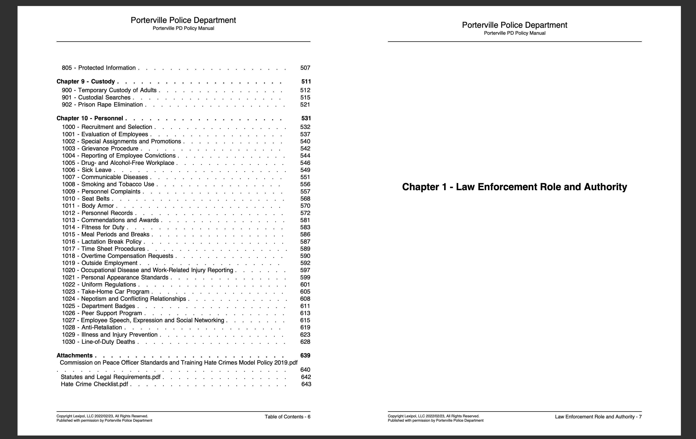
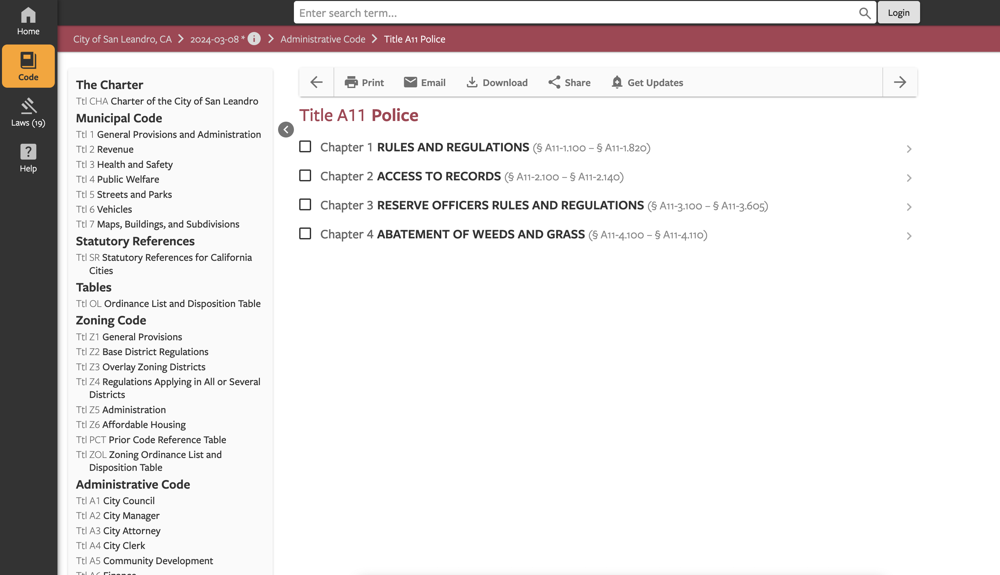
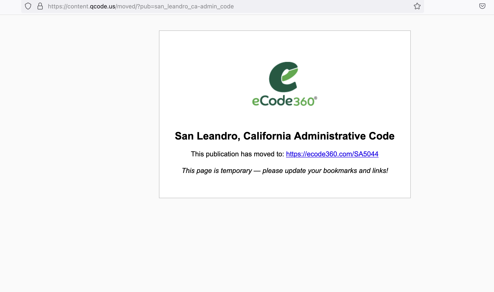

Legal Design for an AI Future
What does it mean to provide access?
![]()
June 28, 2024
What is human-centered? And shouldn’t we be planet-centered?
HAI (Human-centered AI Institute)
Mission
The mission of HAI is to advance AI research, education, policy and practice to improve the human condition. Led by faculty from multiple departments across Stanford, research focuses on developing AI technologies inspired by human intelligence; studying, forecasting and guiding the human and societal impact of AI; and designing and creating AI applications that augment human capabilities.
“The choices are essentially political and ideological rather than technological. As we design technological systems, we are in fact designing sets of social relationships, and as we question those social relationships and attempt to design systems differently, we are then beginning to challenge in a political way, power structures in society.”
Mike Cooley (1934-2020) in Architect or Bee? The human/technology relationship (1980)
“Legal Design” and legal design
“…innovation in legal services, with practical, agile, and user-centered methods to make the legal system clearer, more efficient, more usable, and friendlier.”
Margaret Hagan in Law by Design retrieved at https://lawbydesign.co/
What does it mean to provide access?
- Machine learning for discovery?
- Machine learning for access?
Know Systemic Racism
- Show interconnections
- Humanize the harm
- Work in collaboration with community
Why law enforcement policy manuals?
“Collecting these materials serves an important role in creating an informed populace…When civilians know what is allowed by police policies, they are armed with the knowledge to protect themselves, their loved ones and their community by fighting back against abuse. People must know their rights in order to identify when their rights are being violated.”
Judge LaDoris Hazzard Cordell (Ret.)
This map shows California law enforcement agencies (city-level proximity) that participate in the Commission on Peace Officer Standards and Training (POST). (Map created by Claudia Engel for Know Systemic Racism)
Porterville Police Department Policy Manual




San Leandro Police Department


California Senate Bill 978
SB 978, Bradford. Law enforcement agencies: public records.
…This bill would, commencing January 1, 2020, require the Commission on Peace Officer Standards and Training and each local law enforcement agency to conspicuously post on their Internet Web sites all current standards, policies, practices, operating procedures, and education and training materials that would otherwise be available to the public if a request was made pursuant to the California Public Records Act.
California Senate Bill 978 (cont.)
SECTION 1. The Legislature finds and declares all of the following:
…
Making regulations of law enforcement agencies easily accessible to the public helps educate the public about law enforcement policies, practices, and procedures, increases communication and community trust, and enhances transparency, while saving costs and labor associated with responding to individual requests for this information.
Diagram for proccessing a document collection as data.
Commercial Content Management Systems
Lexipol

Eagly, Ingrid V., and Joanna C. Schwartz. “Lexipol: The privatization of police policymaking.” TEx. L. REv. 96 (2017): 891.
Simple Sabotage whether intentional or not